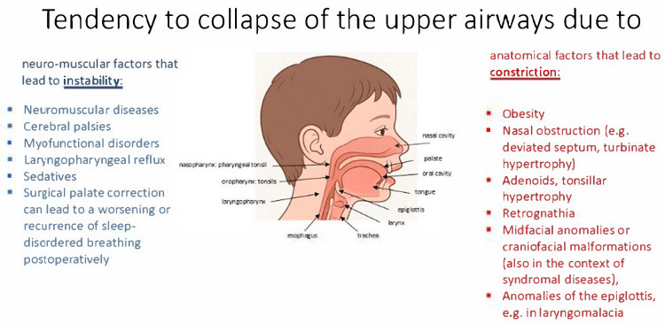
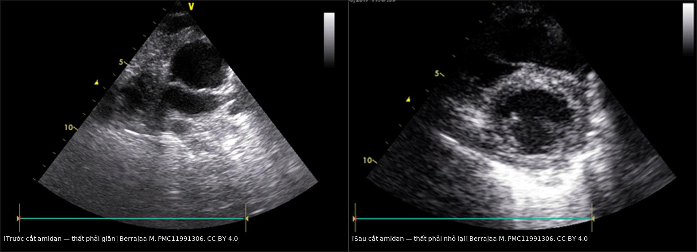
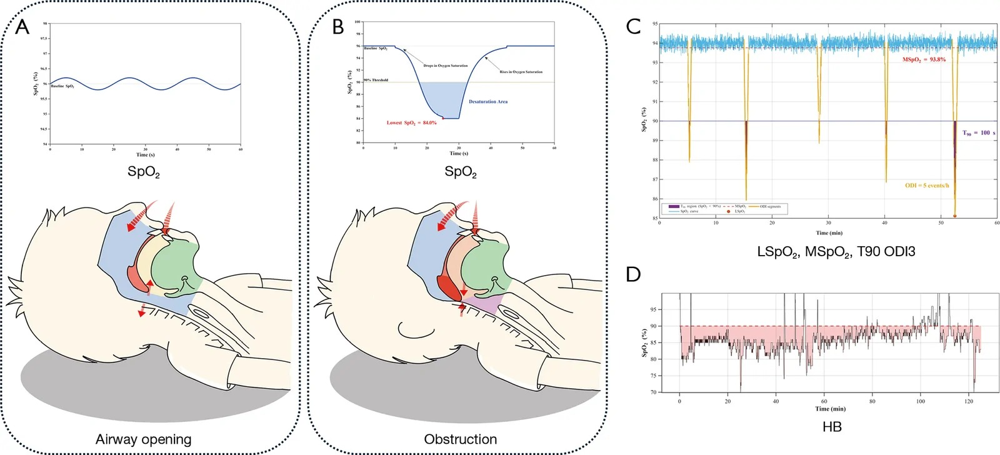

1803 — Ngưng thở khi ngủ do tắc nghẽn ở trẻ bệnh phổi mạn (BPD, PIBO, giãn phế quản) / Obstructive sleep apnoea in children with chronic lung disease
Tags: pattern:ngung-tho-khi-ngu pattern:ha-oxy-khi-ngu pattern:phi-dai-amidan vung:duong-tho-tren vung:phoi-nhi score:AASM-2.6 protocol:PSG protocol:sieu-am-tim
Mức chắc chắn (certainty): tổng hợp y văn (literature synthesis) — tổng hợp từ y văn mở 2017–2026 (Europe PMC: Klusza R, Pediatr Allergy Immunol Pulmonol 2026, PMC13640027; Ortiz LE, Pediatr Pulmonol 2017, PMC5693767; Stuck BA, Children 2025, PMC12839698; Berrajaa M, Pan Afr Med J 2025, PMC11991306; Nasir M, Sage Open Pediatr 2026, PMC13129280; Zhong L, Transl Pediatr 2026, PMC13559076; Yang Q, Nat Sci Sleep 2024, PMC11012695; Elias DA, Laryngoscope 2026, PMC13569636; Wei P, Eur Respir Rev 2026, PMC13439383; Kirkham EM, J Clin Sleep Med 2026, PMC13341984). Số nào chưa kiểm chứng ghi "chưa rõ".
Bài này trả lời "trẻ đã có bệnh phổi mạn thì OSA khác gì trẻ khoẻ, và khi nào cần chụp/đo gì". Tăng áp lực động mạch phổi do bệnh phổi mạn đã có ở 686; BPD ở 606; PIBO ở 669.
1. Tổng quan bệnh học – cơ chế hình ảnh
- Định nghĩa & ngưỡng (khác người lớn): OSA ở trẻ khi chỉ số ngưng thở–giảm thở do tắc nghẽn (obstructive apnoea–hypopnoea index, OAHI) > 1 biến cố/giờ; phân độ nhẹ 1–5, vừa 5–10, nặng > 10; tài liệu phẫu thuật còn dùng rất nặng khi AHI ≥ 25 (Yang Q 2024, PMC11012695; Elias DA 2026, PMC13569636). Không áp ngưỡng người lớn (AHI ≥ 5) cho trẻ.
- Tần suất nền và tần suất ở nhóm nguy cơ: OSA ảnh hưởng 1–5% trẻ nói chung (Klusza R 2026, PMC13640027). Ở 142 trẻ 6–12 tuổi có BPD, 34% có điểm sàng lọc PSQ-SRBD > 0,33; hen làm tăng 4 lần khả năng có SDB (OR 3,75; 95% CI 1,33–10,58) và 6 lần khả năng ngáy (OR 6,22; 1,13–34,36).
- Vì sao trẻ BPD dễ OSA (TẠI SAO, không chỉ liệt kê):
- Đường thở trên nhỏ + giảm trương lực: sinh non, hẹp dưới thanh môn, mềm sụn thanh quản/khí phế quản (TBM), phì đại amidan–VA; trong REM, cơ giãn đường thở trên mất trương lực → tắc nghẽn dài nhất.
- Dự trữ oxy thấp: BPD có FRC thấp, phổi kém giãn nở, nhiều vùng V/Q thấp → cùng một thời gian ngưng thở, SpO₂ tụt nhanh và sâu hơn trẻ khoẻ.
- Giảm đáp ứng hoá cảm sau thiếu oxy/tăng CO₂ mạn → nhiều ngưng thở trung ương và giảm thông khí, không chỉ tắc nghẽn. Trong đoàn hệ BPD (n = 140), RDI trung bình 9,9/giờ, OAHI 6,5/giờ, biến cố trung ương 3,0/giờ; RDI giảm 22% (1,5 biến cố/giờ) mỗi năm tuổi nhưng vẫn cao ở 4 tuổi; bệnh hô hấp nặng hơn → nhiều biến cố trung ương hơn 38% (Ortiz LE 2017, PMC5693767).
- Viêm mũi dị ứng, trào ngược, béo phì (hay gặp ở BPD/PIBO) làm hẹp thêm và tăng gánh hô hấp.
- Vì sao OSA làm nặng tăng áp phổi (chuỗi nhân quả): ngưng thở → giảm oxy phế nang từng đợt → co mạch phổi; áp lực trong lồng ngực âm mạnh khi cố thở → tăng hậu gánh thất phải; hoạt hoá giao cảm và stress oxy hoá → tái cấu trúc mạch. Hệ quả định lượng: trong 1500 trẻ cắt amidan vì phì đại amidan–VA, tăng áp phổi 5,9%; các yếu tố dự báo gồm tỷ lệ VA/mũi hầu (AN ratio) > 0,75, thở miệng ban ngày, ngáy, OSA, suy dinh dưỡng hoặc thừa cân; tăng áp phổi và rối loạn chức năng thất phải hồi phục sau 12 tuần ở nhóm được mổ (Nasir M 2026, PMC13129280). Ca nguyên văn: bé trai 3 tuổi, phì đại amidan hai bên → suy tim phải + tăng áp phổi, hồi phục hoàn toàn sau cắt amidan (Berrajaa M 2025, PMC11991306).
- Cơ chế hình ảnh – vì sao phải đo chứ không "nhìn" (vật lý):
- PSG đo dòng khí (áp lực mũi + thermistor), nỗ lực hô hấp (đai ngực–bụng), SpO₂, CO₂ qua da/EtCO₂, điện não–mắt–cơ, tư thế và video. Tắc nghẽn = có nỗ lực nhưng không có dòng khí; trung ương = không nỗ lực.
- Oximetry chỉ là hệ quả, không phải biến cố: một đêm có thể nhiều ngưng thở ngắn không tụt ≥ 3% → AHI cao mà oximetry "sạch"; ngược lại BPD nền SpO₂ 92–93% làm ngưỡng giảm 3% chỉ còn 89–90%, dễ bị đọc là "dao động bình thường".
- Chỉ số thiếu oxy tích luỹ (hypoxic burden, HB) = diện tích dưới đường cong SpO₂ (độ sâu × thời gian), khác AHI chỉ đếm số biến cố. Ở 115 trẻ, HB tương quan với OAHI r = 0,801 và AUC 0,888 để chẩn đoán OSA, tốt hơn ODI3 (AUC 0,857), T90 (0,701), SpO₂ thấp nhất (0,689), SpO₂ trung bình (0,614) (Zhong L 2026, PMC13559076).
- Siêu âm tim ước lượng áp lực phổi bằng Bernoulli rút gọn: RVSP = 4 × V(TR)² + áp lực nhĩ phải; dấu quá tải vách liên thất dẹt (EI ≥ 1,3), PAAT:RVET < 0,30, TAPSE thấp (ngưỡng và cách đo ở bài 686).
2. Mẫu hình + chẩn đoán phân biệt theo cơ chế (gamut)
- Tắc nghẽn giải phẫu: phì đại amidan–VA (hay nhất, amidan độ III–IV "hôn nhau"), béo phì, bất thường sọ mặt (Pierre Robin, Treacher–Collins, Down, mucopolysaccharidosis), hẹp mũi/hẹp dưới thanh môn, hẹp khí quản sau đặt nội khí quản.
- Tắc nghẽn động học: mềm sụn thanh quản (laryngomalacia), mềm sụn khí–phế quản (TBM), liệt dây thanh, hẹp thanh môn — đặc biệt ở BPD; tắc nghẽn tăng khi ngửa và trong REM.
- Giảm trương lực/thần kinh–cơ: bại não, bệnh cơ–thần kinh, hội chứng Down, thuốc an thần; giảm thông khí khi ngủ nhiều hơn ngưng thở thuần tuý.
- Trung ương: ngưng thở trung ương của trẻ non tháng (giảm dần theo tuổi), giảm thông khí do béo phì (OHS), hội chứng giảm thông khí trung ương bẩm sinh (CCHS) — hiếm, nhưng không được gọi là OSA.
- Bệnh phổi mạn (nhóm chính của bài): BPD, PIBO/BO, giãn phế quản, BOS sau ghép — thường OSA hỗn hợp + giảm thông khí + thiếu oxy khi ngủ, và tăng áp phổi là biến chứng cần chủ động tìm.
- Gamut "trẻ bệnh phổi mạn ngáy/ngủ kém": OSA do amidan–VA, OSA hỗn hợp BPD, TBM/laryngomalacia, viêm mũi dị ứng, trào ngược, béo phì, thiếu oxy khi ngủ không do ngưng thở, và tăng áp phổi tiến triển — mỗi nhánh xử trí khác nhau.
3. Bảng so sánh phân biệt (ma trận đối chiếu)
| Thực thể (entity) | Hình ảnh / PSG điển hình | Chốt vào (rule-in) | Chốt loại (rule-out) | Gợi ý xác nhận |
|---|---|---|---|---|
| OSA do phì đại amidan–VA | Amidan độ III–IV, VA AN ratio > 0,75; PSG OAHI > 1, tắc nghẽn từng đợt, SpO₂ tụt cuối biến cố | OAHI > 1 + phì đại amidan–VA + ngáy/thở miệng | PSG bình thường (OAHI ≤ 1) + không tắc nghẽn → không mổ vì "amidan to" đơn thuần | PSG; soi mũi họng; X-quang sọ nghiêng khi cần |
| OSA hỗn hợp ở BPD | OAHI 6,5/giờ + biến cố trung ương 3,0/giờ; RDI 9,9/giờ; giảm theo tuổi nhưng còn cao ở 4 tuổi | BPD + OAHI > 1 + nhiều biến cố trung ương + thiếu oxy khi ngủ | Chỉ có ngáy, PSG không tắc nghẽn/không giảm oxy → không phải OSA | PSG có CO₂ qua da và đai bụng–ngực; lặp PSG khi lớn |
| Giảm thông khí khi ngủ / OHS | Tăng CO₂ mạn (tcCO₂/EtCO₂), SpO₂ thấp kéo dài, không nhiều biến cố tắc nghẽn | PaCO₂/tcCO₂ tăng khi ngủ + OAHI thấp | CO₂ bình thường khi ngủ + OAHI cao → OSA đơn thuần | PSG + khí máu/thông khí; đánh giá béo phì, thần kinh–cơ |
| Ngưng thở trung ương | Không nỗ lực ngực–bụng, không dòng khí; hay gặp ở trẻ non tháng | Biến cố trung ương > 5/giờ hoặc kéo dài > 20 giây + không nỗ lực | Có nỗ lực + không dòng khí → tắc nghẽn | PSG đai ngực–bụng; loại trừ CCHS nếu kéo dài ngoài nhũ nhi |
| TBM / laryngomalacia | Xẹp đường thở > 50% khi thở ra; rít thì hít vào; CT động/nội soi | Xẹp > 50% + hết khi hít vào (TBM); sa nắp thanh môn (LM) | Đường thở không xẹp khi thở ra → không TBM | Nội soi/CT động thì thở ra; cross-link 602 |
| OSA có tăng áp phổi | RVSP ≥ 50% áp lực hệ thống, EI ≥ 1,3, PAAT:RVET < 0,30, giãn thất phải | OSA nặng + ≥ 1 dấu quá tải thất phải | Siêu âm tim bình thường + không shunt → chưa có PH | Siêu âm tim lúc chẩn đoán và 12 tuần sau cắt amidan |
| OSA nhẹ — theo dõi được | OAHI < 3, amidan nhỏ/vừa, không giảm oxy nặng | OAHI < 3 + triệu chứng nhẹ + gia đình theo dõi được | Triệu chứng nặng, giảm oxy, PH, bệnh phổi mạn → không theo dõi đơn thuần | PSQ-SRBD + PSG lặp; 13% tiến triển OAHI ≥ 3 sau 12 tháng |

Bên trái: yếu tố thần kinh–cơ gây mất ổn định (bệnh cơ–thần kinh, bại não, rối loạn chức năng cơ, trào ngược thanh quản, thuốc an thần, phẫu thuật vùng hầu họng làm nặng thêm). Bên phải: yếu tố giải phẫu gây hẹp (béo phì, hẹp mũi, phì đại VA–amidan, hồi não, bất thường sọ mặt, bất thường nắp thanh môn). Đây là lý do cùng một "ngáy" ở trẻ BPD có thể do 2–3 cơ chế chồng nhau. Nguồn: Stuck BA & Schneider B, Children 2025 (PMC12839698), CC BY 4.0.Ảnh ghép: tăng áp phổi do OSA hồi phục sau cắt amidan

Trái: mặt cắt cạnh ức trục ngắn — thất phải giãn, chèn thất trái (ca bé trai 3 tuổi có suy tim phải + tăng áp phổi do phì đại amidan). Phải: sau cắt amidan, thất phải nhỏ lại, hình dạng thất trái trở về bình thường. Ảnh ghép letterbox, không crop/kéo giãn. Nguồn: Berrajaa M et al., Pan Afr Med J 2025 (PMC11991306), CC BY 4.0.4. Protocol chụp/đo + phân độ & ngưỡng điều trị
4.1. Ai cần PSG (không chỉ hỏi "có ngáy không")
- Chỉ định PSG: ngáy/thở miệng kéo dài, ngưng thở được người nhà thấy, ngủ không yên, đổ mồ hôi khi ngủ, đau đầu sáng, ban ngày buồn ngủ/kém tập trung, tăng trưởng chậm, tăng áp phổi hoặc tim phải giãn, bệnh phổi mạn (BPD/PIBO/giãn phế quản), hội chứng Down/sọ mặt, béo phì, thần kinh–cơ.
- Sàng lọc trước: PSQ-SRBD > 0,33 là dương (Klusza R 2026; Kirkham EM 2026) — nhạy nhưng không thay PSG; điểm bình thường không loại trừ ở trẻ có bệnh phổi mạn.
- Thời điểm: PSG khi trẻ ổn định, thở khí trời hoặc với hỗ trợ hô hấp thường dùng; ở BPD, nhiều trung tâm làm trước xuất viện và lặp lại khi lớn — chưa có ngưỡng tuổi thống nhất trong nguồn đã đọc, ghi "chưa rõ".
- Kỹ thuật: PSG có giám sát (attended) theo AASM Scoring Manual v2.6; tối thiểu gồm EEG/EOG/EMG, ECG, áp lực mũi + thermistor, đai ngực–bụng, SpO₂ kèm plethysmography, tcCO₂/EtCO₂, video, tư thế. Ghi rõ quy tắc chấm điểm giảm thở (3% hay 4% + arousal) vì cùng một đêm có thể ra hai AHI khác nhau.
- Oximetry tại nhà: chỉ là sàng lọc/theo dõi, không chẩn đoán OSA. Báo cáo ODI3, T90, SpO₂ thấp nhất, SpO₂ trung bình; nếu có, tính HB. Oximetry bình thường không loại trừ OSA (Zhong L 2026).
4.2. Phân độ & xử trí theo OAHI
| OAHI (biến cố/giờ) | Phân độ | Hướng xử trí ở trẻ bệnh phổi mạn |
|---|---|---|
| ≤ 1 | Không OSA | Điều trị nguyên nhân khác (mũi, trào ngược, TBM); lặp PSG nếu triệu chứng |
| 1–5 | Nhẹ | Cắt amidan–VA nếu phì đại có triệu chứng; theo dõi sát nếu chọn quan sát (13% tiến triển OAHI ≥ 3 sau 12 tháng) |
| 5–10 | Vừa | Ưu tiên cắt amidan–VA; CPAP nếu không mổ được/không đáp ứng; tìm PH |
| > 10 | Nặng | Cắt amidan–VA + đánh giá tim (siêu âm tim); CPAP/NIV cầu; theo dõi hậu phẫu |
| ≥ 25 | Rất nặng | Như trên + gây mê–hậu phẫu có kế hoạch; không làm "bộ xét nghiệm tim" tràn lan |
- Vì sao "rất nặng" không đồng nghĩa "phải làm tim ngay": trong 144 trẻ AHI ≥ 25 cắt amidan, 26,4% được làm workup tim trước mổ, chỉ 7,9% bất thường (đều béo phì 13–16 tuổi, AHI > 50) và không ca nào đổi xử trí (Elias DA 2026, PMC13569636) → chọn theo nguy cơ (PH đã biết, Down, béo phì nặng, tim phải giãn), không làm hàng loạt.
4.3. Điều trị & theo dõi
- Bậc 1 — cắt amidan–VA khi phì đại có triệu chứng: cải thiện AHI, triệu chứng ban ngày, chất lượng sống; phần cắt amidan (partial tonsillectomy) hiệu quả tương đương, ít biến chứng hơn (Stuck BA 2025, PMC12839698).
- CPAP/NIV khi: không mổ được, OSA tồn dư sau mổ, giảm thông khí khi ngủ, hoặc cầu nối trước mổ. Thất bại CPAP/NIV phải soi lại giao diện – rò miệng – thông số – vị trí trước khi kết luận "không dung nạp"; sau đó xét phẫu thuật tai mũi họng, giãn hàm nhanh (RME), giảm cân, phẫu thuật sọ mặt, kích thích thần kinh hạ thiệt ở ca chọn lọc (Amaddeo A 2020, PMC7649204).
- Kiểm soát bệnh nền: tối ưu oxy/thông khí, điều trị viêm mũi dị ứng, trào ngược, béo phì, TBM; tránh an thần ức chế hô hấp.
- Theo dõi sau điều trị: đánh giá lại triệu chứng + PSQ-SRBD, PSG khi còn triệu chứng/dùng CPAP, và siêu âm tim 12 tuần sau cắt amidan nếu có PH (Nasir M 2026). Lịch PSG lặp cụ thể chưa có đồng thuận trong nguồn đã đọc — ghi "chưa rõ".
flowchart TD
A[Trẻ bệnh phổi mạn: ngáy, thở miệng, ngưng thở, ngủ kém] --> B[PSQ-SRBD và khám đường thở trên]
B -->|Dương hoặc triệu chứng rõ| C[PSG có giám sát: AASM 2.6 + CO2]
C --> D{OAHI}
D -->|Nho hon hoac bang 1| E[Không OSA: trị mũi, trào ngược, TBM]
D -->|1 den 5| F[Đánh giá amidan VA và triệu chứng]
D -->|5 den 10| G[Ưu tiên cắt amidan VA]
D -->|Lon hon 10| H[Cắt amidan VA + siêu âm tim]
H --> I{RVSP trên 50 phan tram hoac EI tren 1,3}
I -->|Có| J[Theo dõi tim 12 tuần sau mổ, hội chẩn PH]
I -->|Không| K[Theo dõi lâm sàng và PSG khi còn triệu chứng]
G --> L[CPAP hoặc NIV nếu không mổ được]
F --> L
5. Biến thể bình thường và cạm bẫy
- PSG âm không loại trừ OSA: trẻ có thể chỉ tắc nghẽn trong REM hoặc đêm đầu ngủ ít REM; nếu nghi cao, lặp PSG hoặc theo dõi dài.
- Oximetry "đẹp" ở trẻ BPD: nền SpO₂ 92–93% → ngưỡng 3% chỉ còn 89–90%, biến cố ngắn bị bỏ; phải đọc T90, ODI3, HB và PSG.
- Biến cố trung ương ở trẻ non tháng/BPD (trung bình 3,0/giờ) dễ bị gộp nhầm vào "OSA" → điều trị (CPAP, caffeine, đánh giá thần kinh) khác.
- Giảm thông khí không có ngưng thở: trẻ béo phì/thần kinh–cơ có thể CO₂ tăng mà AHI thấp; thiếu tcCO₂ là bỏ sót.
- "Amidan to" không phải chỉ định mổ: chỉ mổ khi có triệu chứng + OAHI > 1 hoặc biến chứng; ngược lại, amidan nhỏ vẫn có OSA do TBM/sọ mặt.
- AHI không phải tất cả: cùng AHI, HB khác nhau và tương quan với OAHI r = 0,801, AUC 0,888; huyết áp 24 giờ và biến chứng tim mạch có thể xuất hiện ở trẻ AHI "nhẹ" (Wei P 2026, PMC13439383).
- Theo dõi nhẹ: triệu chứng dai dẳng dù PSG không xấu — 57% trẻ theo dõi 12 tháng vẫn còn/tăng triệu chứng, dù chỉ 13% tiến triển OAHI ≥ 3; hen (OR 2,70) và phơi nhiễm khói thuốc (OR 2,41) dự báo triệu chứng dai dẳng (Kirkham EM 2026).
- Cắt amidan không chữa được bệnh phổi: sau mổ vẫn phải tối ưu oxy, dinh dưỡng, điều trị TBM; OSA tồn dư gặp ở trẻ Down/béo phì — cần PSG lại.
- Cạm bẫy mặt cắt: trên CT ngực, "khí quản hẹp" ở thì hít vào có thể giả do TBM chỉ lộ khi thở ra; phải chụp thì thở ra/động (bài 602).
6. Tự lượng giá — Blind Quiz
Ca 1 — Bé trai 3 tuổi, ngáy to, thở miệng, ngủ ngắt quãng, phù nhẹ và gan to. Siêu âm tim dưới đây: bạn thấy gì và vì sao?
- Gợi ý lâm sàng: không bệnh tim bẩm sinh; amidan hai bên độ IV; SpO₂ khi ngủ có nhiều đợt tụt.
- Câu hỏi: Dấu hiệu chính trên ảnh trái? Cơ chế nào nối OSA với thất phải? Sau điều trị nguyên nhân, bạn kỳ vọng gì trên siêu âm?
Bấm để hiện đáp án (findings + chẩn đoán)
- Dấu hiệu: thất phải giãn, chèn thất trái trên mặt cắt cạnh ức trục ngắn; ảnh phải sau cắt amidan cho thấy thất phải nhỏ lại, thất trái trở về hình dạng bình thường.
- Chẩn đoán: tăng áp phổi + suy tim phải do OSA từ phì đại amidan. Cơ chế: thiếu oxy từng đợt → co mạch phổi, áp lực lồng ngực âm → tăng hậu gánh thất phải, tái cấu trúc mạch khi kéo dài.
- Kỳ vọng: hồi phục sau 12 tuần ở phần lớn ca (1500 trẻ: PH 5,9%, hồi phục sau mổ) — nhưng phải theo dõi siêu âm tim, không mặc định "mổ là xong".
- Nguồn ảnh: Berrajaa M et al., Pan Afr Med J 2025 (PMC11991306), CC BY 4.0.
Ca 2 — Trẻ 5 tuổi, BPD, SpO₂ nền 93% khi thở khí trời. Đêm có nhiều đợt tụt xuống 88–90%. Nhìn hình, bạn chọn chỉ số nào để mô tả "nặng" và vì sao?

- Câu hỏi: (A) đường SpO₂ bình thường; (B) cách tính diện tích giảm bão hoà; (C) LSpO₂, MSpO₂, T90, ODI3; (D) HB. Chỉ số nào tương quan nhất với OAHI? Vì sao AHI có thể đánh giá thấp?
Bấm để hiện đáp án (findings + chẩn đoán)
- (A) dao động sinh lý; (B) HB = diện tích phần dưới đường nền, phản ánh độ sâu × thời gian; (C) các chỉ số rời rạc; (D) HB.
- HB tương quan với OAHI r = 0,801; AUC 0,888 — tốt hơn ODI3 (0,857), T90 (0,701), LSpO₂ (0,689), MSpO₂ (0,614). Vì AHI chỉ đếm biến cố, không cộng dồn mức độ và thời gian thiếu oxy.
- Ở trẻ BPD, nền SpO₂ thấp làm ngưỡng 3% "ngắn" hơn và dễ bỏ sót biến cố ngắn → phải đọc cùng PSG, không chỉ oximetry.
- Nguồn ảnh: Zhong L et al., Transl Pediatr 2026 (PMC13559076), CC BY-NC-ND 4.0 (nguyên bản, không crop).
Ca 3 — Trẻ 4 tuổi bại não, trương lực cơ giảm, ngáy và thở miệng; amidan độ II. Bạn phân loại cơ chế nào và bước tiếp theo?
- Câu hỏi: Trẻ này có mấy nhóm yếu tố? Vì sao amidan độ II vẫn có thể OSA nặng? Cần đo gì trước khi quyết định mổ?
Bấm để hiện đáp án (findings + chẩn đoán)
- Có cả yếu tố thần kinh–cơ (bại não, giảm trương lực) và yếu tố giải phẫu (thở miệng, có thể hẹp mũi) — không chỉ amidan.
- Amidan độ II không loại trừ OSA: tắc nghẽn có thể do giảm trương lực cơ hầu + TBM + hẹp mũi, và nặng hơn trong REM.
- Trước mổ: PSG có CO₂ qua da (tìm giảm thông khí + biến cố trung ương), đánh giá đường thở dưới/TBM, siêu âm tim nếu OAHI nặng; hội chẩn hô hấp – tai mũi họng – gây mê.
- Nguồn ảnh: Stuck BA & Schneider B, Children 2025 (PMC12839698), CC BY 4.0.
Bài liên quan chéo
- 600 – Tổng quan Nhi khoa
- 606 – BPD: bệnh phổi mạn ở trẻ sinh non
- 686 – Tăng áp lực động mạch phổi trong bệnh phổi mạn nhi
- 602 – Tracheobronchomalacia ở trẻ BPD
- 669 – Theo dõi dài hạn PIBO & Swyer–James
- 694 – Mềm sụn thanh quản ở nhũ nhi
- 612 – Cấp cứu đường thở trên trẻ em
- 082 – Bại não & an toàn nuốt ở trẻ
Ảnh
images/1803_co-che-tac-nghen-duong-tho_Minhhoa_PMC12839698.jpg— CC BY 4.0.images/1803_composite_suy-tim-phai-truoc-sau_ECHO_PMC11991306.jpg— CC BY 4.0 (ảnh ghép letterbox, không crop).images/1803_spo2-thieu-oxy_Dothi_PMC13559076.jpg— CC BY-NC-ND 4.0 (nguyên bản).- Nguồn + giấy phép từng ảnh:
images/CREDITS.md; link gốc:sources.md.
Không dùng để chẩn đoán độc lập khi chưa có người hướng dẫn.